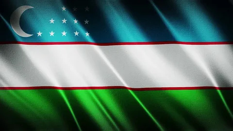
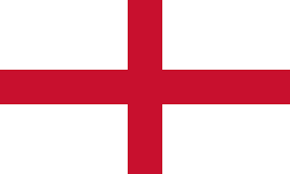

- Uzbekistan

Флаг Узбекистана (узбекский: Oʻzbekiston davlat bayrogʻi / Ўзбекистон Республикасининг давлат байроғи) состоит из горизонтальной полосы лазурного, белого и зеленого цветов, разделенной двумя тонкими красными фимбриями, с белым полумесяцем и двенадцатью белыми звездами в кантоне. Принятый в 1991 году для замены флага Узбекской Советской Социалистической Республики (ССР), он был флагом Республики Узбекистан с момента обретения страной независимости в том же году. Дизайн нынешнего флага был частично вдохновлен предыдущим.
- Rossiya
.png)
Столица — Москва. Государственный язык на всей территории страны — русский,Перейти к разделу «#Языки» в ряде регионов России также установлены свои государственные и официальные языки. Денежная единица — российский рубль.Перейти к разделу «#Общее состояние, основные показатели»
Россия — многонациональное государство с широким этнокультурным многообразием[25]. Согласно результатам переписей населения России 2010 года, а также аннексированных Россией украинских Крыма и Севастополя 2014 года, в стране живут представители свыше 190 национальностей, среди которых русские составляют свыше 80 %, а русским языком владеют свыше 99,4 % россиян[26]. Бо́льшая часть населения (около 75 %) в религиозном отношении относит себя к православию[27], что делает Россию страной с самым многочисленным православным населением в мире.Перейти к разделу «#Демография и социальная сфера»
Angliya

А́нглия (англ. England [ˈɪŋɡlənd]) — страна, являющаяся крупнейшей административно-политической частью[1] Соединённого Королевства Великобритании и Северной Ирландии. Население Англии составляет 84 % от общего числа населения Великобритании. Столица — Лондон, крупнейший город Великобритании.
Англия стала объединением семи некогда враждовавших королевств в 927 году и названа по имени древнегерманского племени англов, обосновавшегося на острове Великобритания в V—VI веках.